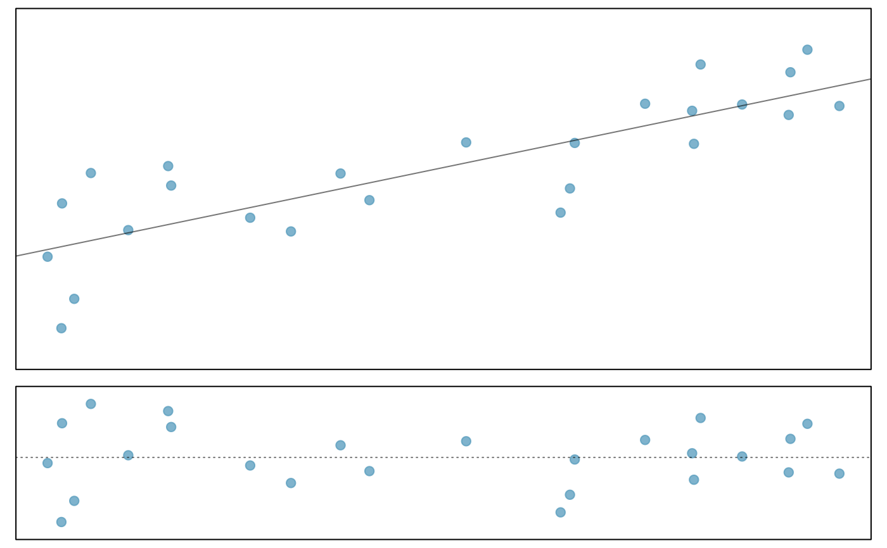

Create a simple regression plot with residual plot.
linResPlot( x, y, axes = FALSE, wBox = TRUE, wLine = TRUE, lCol = "#00000088", lty = 1, lwd = 1, main = "", xlab = "", ylab = "", marRes = NULL, col = fadeColor(4, "88"), pch = 20, cex = 1.5, yR = 0.1, ylim = NULL, subset = NULL, ... )
| x | Predictor variable. |
|---|---|
| y | Outcome variable. |
| axes | Whether to plot axis labels. |
| wBox | Whether to plot boxes around each plot. |
| wLine | Add a regression line. |
| lCol | Line color. |
| lty | Line type. |
| lwd | Line width. |
| main | Title for the top plot. |
| xlab | x-label. |
| ylab | y-label. |
| marRes | Margin for the residuals plot. |
| col | Color of the points. |
| pch | Plotting character of points. |
| cex | Size of points. |
| yR | An additional vertical stretch factor on the plot. |
| ylim | y-limits. |
| subset | Boolean vector, if wanting a subset of the data. |
| ... | Additional arguments passed to both plots. |
# Currently seems broken for this example. n <- 25 x <- runif(n) y <- 5 * x + rnorm(n) myMat <- rbind(matrix(1:2, 2)) myW <- 1 myH <- c(1, 0.45) par(mar = c(0.35, 0.654, 0.35, 0.654)) layout(myMat, myW, myH) linResPlot(x, y, col = COL[1, 2])